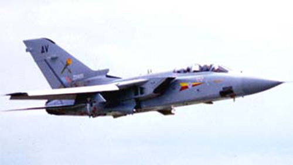

Tornado ADV (F.2)

- Разработчик: Panavia
- Страна: Великобритания
- Первый полет: 1979
- Тип: Всепогодный дальний перехватчик
В июле 1968 г. Великобритания, ФРГ и Италия заключили соглашение о разработке истребителя-бомбардировщика Tornado IDS для ВВС и ВМС своих стран. В том же году Великобритания, которой требовался дальний перехватчик, стала изучать возможность создания варианта такого самолета на основе истребителя-бомбардировщика Tornado. Главным назначением нового самолета должно было являться боевое патрулирование и перехват средних бомбардировщиков и разведчиков - Ту-22, Ту-22М и Су-24, представлявших наибольшую угрозу для Британских островов.
Рабочее проектирование перехватчика Tornado ADV (Air Defence Variant - вариант самолета ПВО) было одобрено в марте 1976 г., первый полет опытного истребителя состоялся 27 октября 1979 г., а серийного самолета - 12 апреля 1984 г. Первые 18 истребителей, поставленные ВВС Великобритании к октябрю 1985 г., были выпущены в варианте Tornado F.2 с двумя двигателями RB.199 Mk.103. В июле 1986 г. начались поставки перехватчиков в варианте F.3 с двигателями RB.199 Mk.104 и усовершенствованным бортовым оборудованием. В дальнейшем на самолетах F.2 также предполагается установить БРЭО истребителя F.3 (без замены двигателей), после чего они получат обозначение F.2A.
ВВС Великобритании заказано 173 самолета Tornado ADV (в том числе 52 - с двойным управлением). 24 истребителя закупила Саудовская Аравия (в том числе шесть - с двойным управлением).
Состоит на вооружении ВВС Великобритании (поставлено 173 самолета) и Саудовской Аравии (24 самолета).
Крупнейшим конфликтом, в котором приняли участие перехватчики Tornado ADV, была война в зоне Персидского залива. Однако использование самолета было весьма ограниченным (в отличие от ударного самолета Tornado IDS) и нерезультативным. Tornado ADV привлекались к патрулированию воздушного пространства над территорией Саудовской Аравии и Ирака, но не сбили ни одного иракского самолета.
Особенности конструкции
Конструкция на 80% аналогична исходному истребителю-бомбардировщику Tornado IDS. Основные отличия заключаются в удлинении на 1,96 м носовой части фюзеляжа (для размещения новой РЛС) и добавлении секции за кабиной экипажа для подфюзеляжной установки УР "Скайфлэш". Неподвижные части крыла продлены вперед, и их стреловидность возросла с 60 до 67' с целью увеличения хорды и компенсации смещения ЦМ самолета из-за удлинения фюзеляжа и увеличения массы РЛС.
По сравнению с самолетом IDS запас топлива увеличен на 909 л за счет установки топливного бака в дополнительной секции фюзеляжа. В передней части фюзеляжа слева по борту расположена убирающаяся в полете штанга-топливоприемник системы дозаправки топливом в воздухе.
Оборудование Самолет оснащен многорежимной импульсно-доплеровской РЛС GEC Эвионикс AI-24 "Фоксхантер" с максимальной дальностью обнаружения воздушных целей класса "бомбардировщик" 185 км и класса "истребитель" - 80 км. Станция способна обнаруживать и сопровождать на проходе до 12 целей.Самолет оснащен многорежимной импульсно-доплеровской РЛС GEC Эвионикс AI-24 "Фоксхантер" с максимальной дальностью обнаружения воздушных целей класса "бомбардировщик" 185 км и класса "истребитель" - 80 км. Станция способна обнаруживать и сопровождать на проходе до 12 целей.
Силовая установка. ТРДДФ RB.199-34R Mk.104 (2 х 7495 кгс).
Вооружение. Одна встроенная пушка IWKA-Маузер (27 мм). - На подфюзеляжных узлах в полуутопленном положении подвешиваются четыре (по две тандемом) УР "Скайфлэш" класса воздух-воздух с полуактивной моноимпульсной ГСН. Ракеты могут поражать высоко и низко (до 75 м) летящие цели на дальности до 45 км в условиях интенсивных помех. - На каждом из подкрыльевых пилонов могут подвешиваться 1-2 УР AIM-9L "Сайдуиндер" с ТГСН.
| Летно технические характеристики | |
|---|---|
| Модификация | Tornado F.Mk.2 |
| Размах крыла максимальный, м | 13.91 |
| Длина, м | 18.68 |
| Высота, м | 5.95 |
| Площадь крыла, м2 | 26,60 |
| Масса, кг | |
| - пустого самолета | 13600 |
| - нормальная взлетная | 27210 |
| Тип двигателя | 2 ТРДДФ Turbo-union RB199-34R Mk.101 |
| Тяга форсирована, кгс | 2 х 66.01 |
| Максимальная скорость , км/ч | 2333 |
| Крейсерская скорость, км/ч | 1010 |
| Продолжительность патрулирования | до 2 часов |
| Макс. эксплуатационная перегрузка | 7.5 |
| Экипаж, чел | 2 |
| Вооружение: | одна встроенная 27-мм пушка IWKA-Mauser (Mauser BK27) с 180 патронами. боевая нагрузка - 8165 кг на 6 подвесках: 4 УР класса воздух-воздух Sky Flash 2 УР AIM-9L Sidewinder с ИК ГСН или до шести УР AIM-120 AMRAAM средней дальности. |